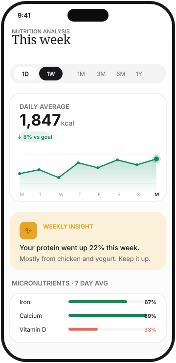

Buy what you actually need.
Most grocery lists are based on habit. TrackKcal's Grocery Coach is based on your data. Low on omega-3? It suggests salmon. Low on iron? It suggests spinach and red meat. With reasoning.

Gaps in. Groceries out.
Audits your last 7 days
Computes micronutrient averages. Compares to recommended daily intake. Identifies the gaps that matter.
Suggests foods that close them
Deterministic math picks the best foods for your specific gaps. Then the AI writes a short reason for each one.
Updates as you shop
Tap an item to mark it bought. Tap to dismiss if you don't want it. The list adapts as your gaps shift week by week.
Vitamin pills are not the answer.
If your iron is low, the answer is often food, not a supplement. Lentils. Spinach. Red meat. Real food in the cart, not a bottle on the shelf.
The Grocery Coach exists because most people don't know which foods actually fix which gaps. The math is not obvious.
- Regional food choices when possible (your gaps, your cuisine)
- Vegetarian-aware if your logs trend that way
- Optional weekly notification when the list refreshes

Pairs well with
Shop with intent.
TrackKcal launches on iOS and Android in Q2 2026.